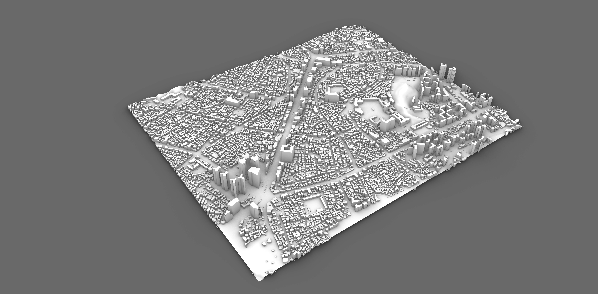
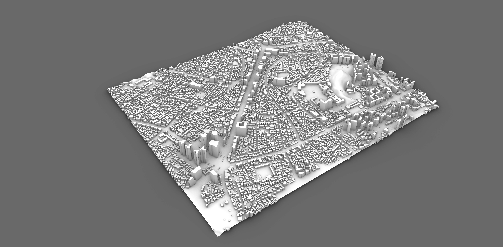

We are a group of people with a shared passion for integrating data analytics and
urban design. Led by Bon Woo Koo, we collect or create, analyze, visualize,
and communicate diverse urban data to better design our cities. We work from the
scales of individual blocks to entire metropolitan regions, combining urban design
principles with GIS, spatial statistics, and cutting-edge artificial intelligence.
우리는 데이터 분석과 도시설계를 통합하는 데 공통된 관심을 가진 연구자들의 모임입니다.
구본우 교수를 중심으로 다양한 도시 데이터를 수집·생성하고, 이를 분석·시각화·소통하여
더 나은 도시를 설계하는 방법을 연구합니다. 개별 블록에서부터 대도시권 규모에 이르기까지,
도시설계 이론을 GIS, 공간통계, 인공지능 기법과 결합하여 연구를 수행합니다.
We learn from one another, challenge ideas together, and collaborate to envision
better cities. We are always open to motivated Master's and PhD students who are
at the intersection of data analytics and urban design.
우리는 서로에게 배우고, 아이디어를 비판적으로 검토하며, 다양한 협업을 통해
더 나은 도시의 모습을 함께 그려갑니다. 데이터 분석과 도시설계의 접점에 관심을 가진
열정적인 석·박사 과정 학생들의 참여를 언제나 환영합니다.
 
